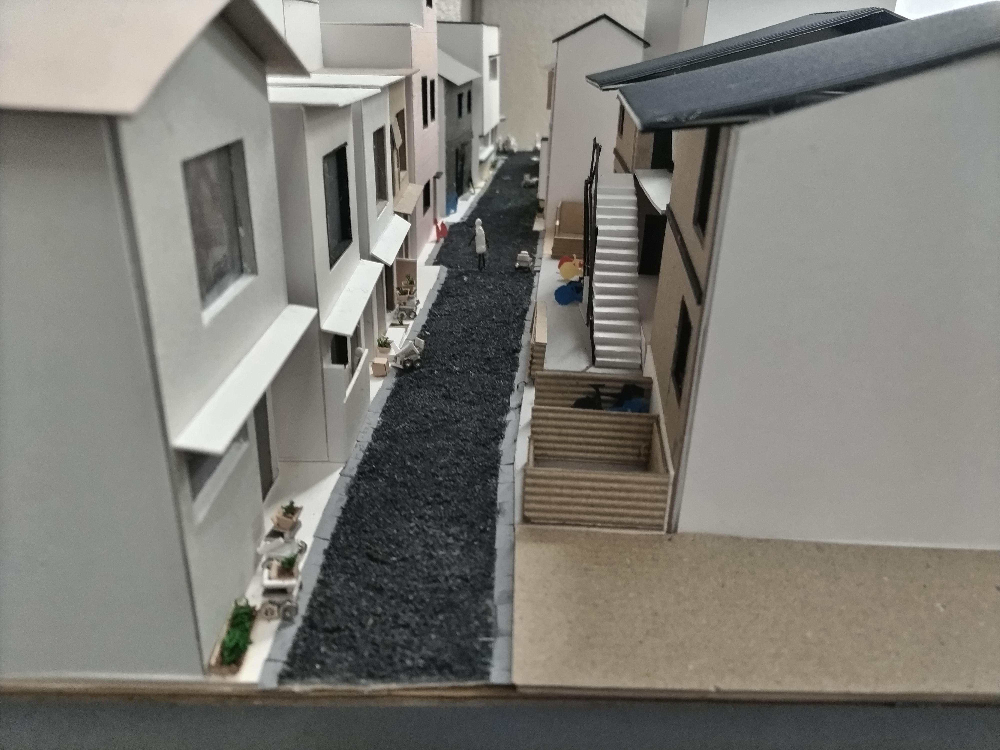
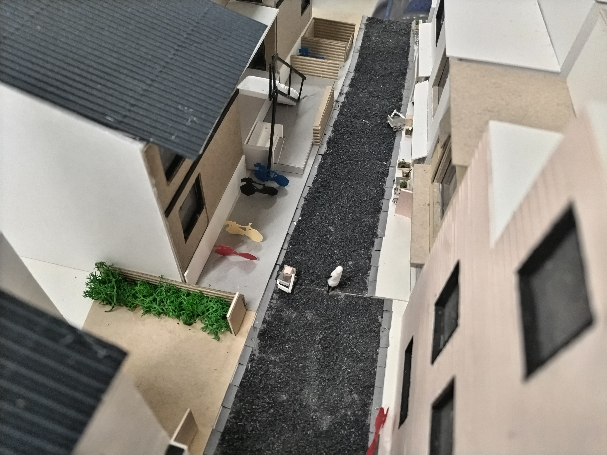
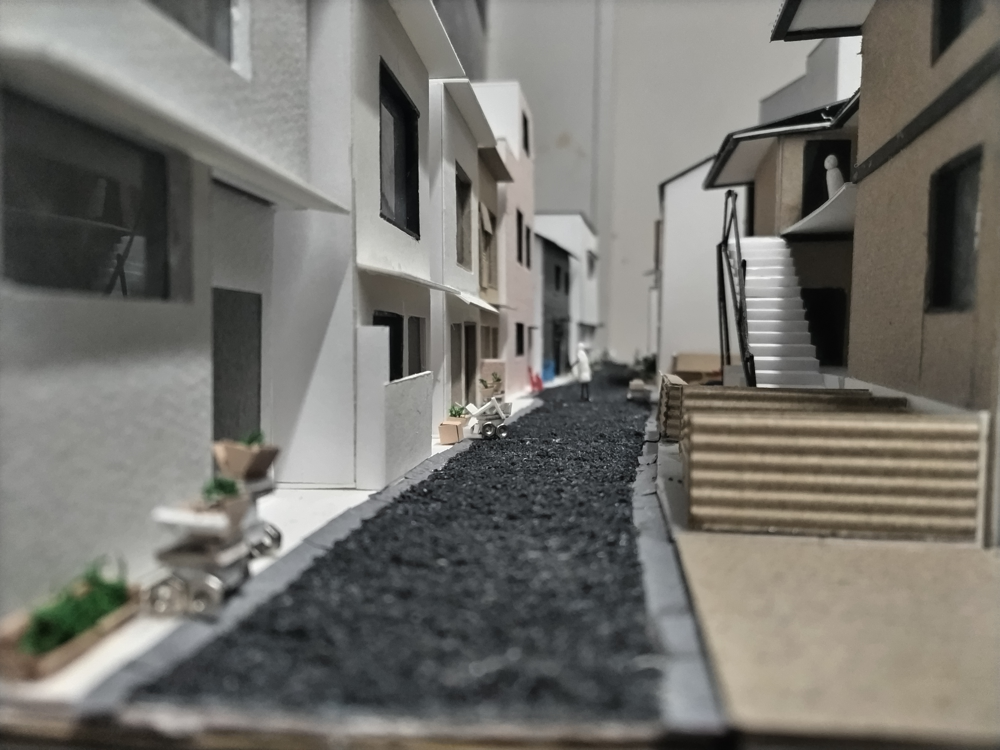
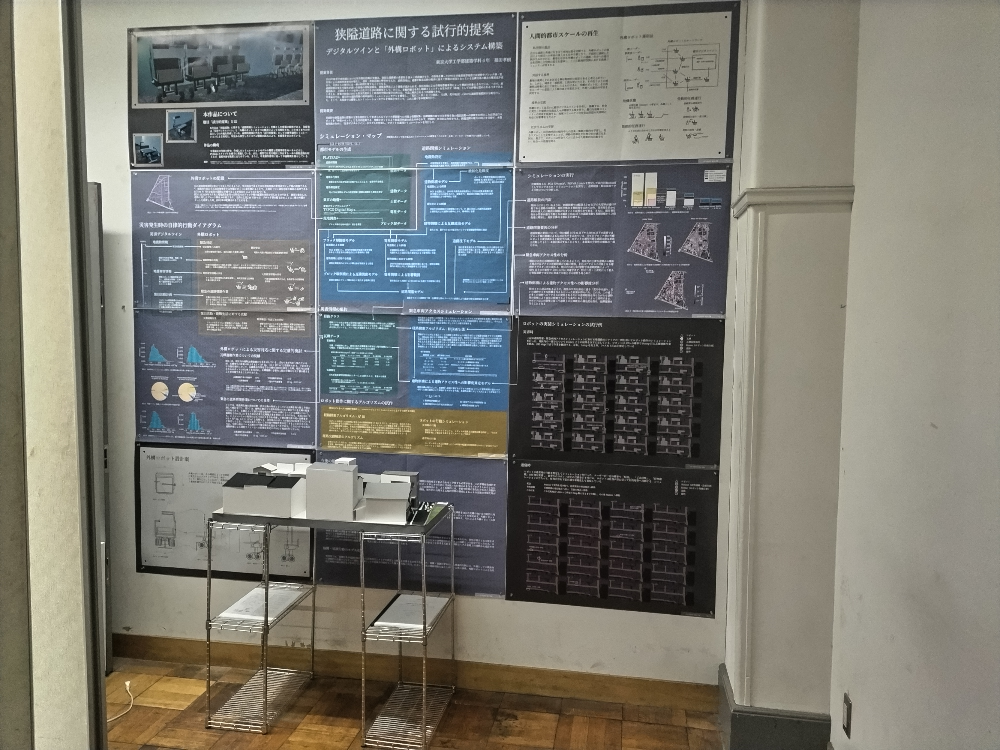
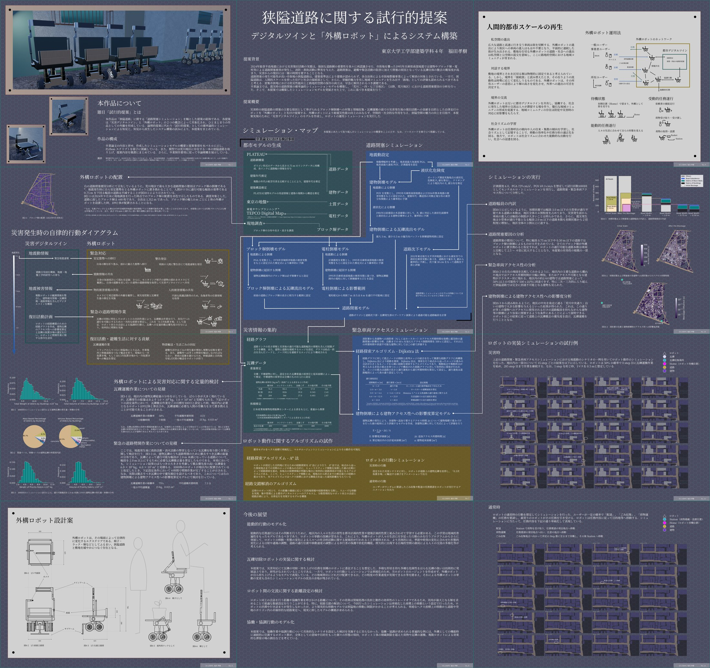

都市部での地震災害における「道路閉塞」の被害予測をもとに，近い将来に向けた提案として「災害デジタルツイン」の実装と「外構ロボット」を提案し，システムの社会へ及ぼす影響を考察した．卒業制作． (2025/2)
【本作品について】
本作品は「狭隘道路」に関する「道路閉塞シミュレーション」を軸とした提案の総体である．各提案は「災害デジタルツイン」と「外構ロボット」の２つの概念によって具象化され，ひとまとまりの作品としての外観を形成している．論理的提案に代わり「試⾏的提案」としての確率論的シミュレーションによる知見と，知見から派生したシステム構築の試みにより，本提案をまとめている．
【提案背景】
2024年能登半島地震における災害復旧活動の実態は，強固な道路網の重要性を我々に再認識させた．市街地を襲った1995年兵庫県南部地震では建物やブロック塀・電柱等による道路閉塞被害が発生し，消防・救助活動に弊害を与えた．道路閉塞は，避難や緊急活動の阻害に加えて閉塞の原因となっている瓦礫自体の撤去の難易度が高まり，災害からの復旧には一層の時間を要することとなる．道路閉塞の発生可能性が高い市街地の狭隘道路は，建築基準法により建築が認められず，各自治体による市街地整備事業によって解消の対象とされている．一方で，狭隘道路は．人間的スケールを持った住戸と社会の接続部として，さらに，景観的魅力を有し地域コミュニティを生み出す「路地」としての評価も認められるべきであると考える．密集市街地における防災性能向上と路地的空間の保存の両立は，早急に解決されるべき課題である．
卒業論文では，震災時の道路閉塞の確率論的シミュレーションモデルを構築し，「荒川二・四・七丁目地区」（以降，荒川地区）における道路閉塞要因の分析を⾏った．そこで，本提案では構築したシミュレーションモデルを発展させた上で，これに基づき本提案を⾏う．
【提案概要】
災害時の狭隘道路の閉塞の主要な原因として挙げられるブロック塀倒壊への対策と情報収集・瓦礫運搬の面での災害発生後の復旧活動への貢献を目的とした自律走⾏ロボットを「外構ロボット」と名付け提案する．外構ロボットにより耐震災性能の向上のみならず，空間的・社会的な作用を与え，狭隘空間の魅力の向上を目指す．本提案実現のために「災害デジタルツイン」のモデルを作成し，ロボットの運用シミュレーションを実行した．




プレゼンボード．
